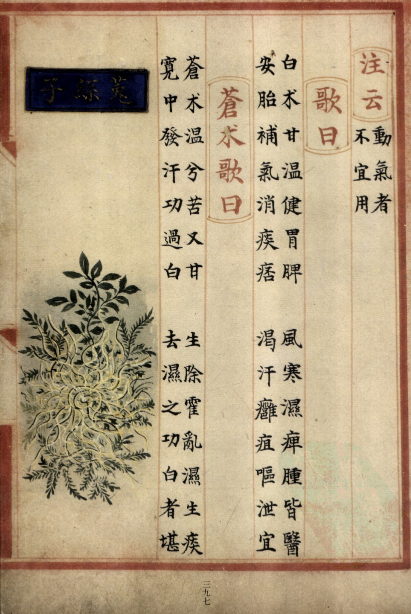
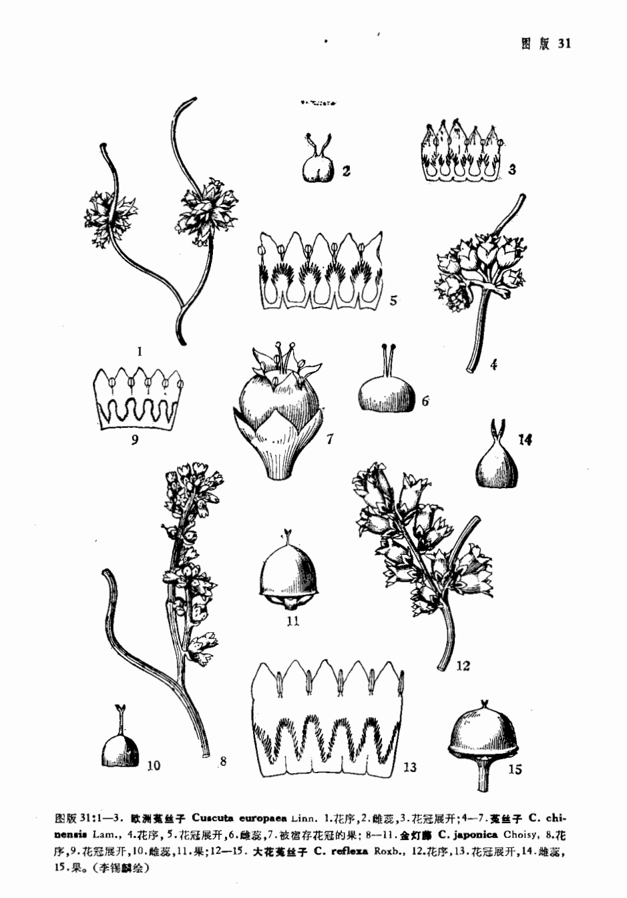

出现篇目
别名 菟缕（《别录》）、菟累（《别录》）、菟芦（《本经》）、菟丘（《广雅》）、赤网 （《别录》）、玉女（《尔雅》）、唐蒙（《尔雅》）、火焰草（《纲目》）、野狐丝（《纲目》）、金线草
古代记载 《毛诗故训传》
唐蒙，菜名。（《毛传》注《桑中》）
《毛诗正义》
正义曰：《释草》云“唐蒙，女萝。女萝，菟丝。”舍人曰：“唐蒙名女萝，女萝又名菟丝。”孙炎曰：“别三名。”郭璞曰：“别四名。”则唐与蒙或并或别，故三、四异也。以经直言唐，而传言“唐蒙”也。《𫠆弁》传曰：“女萝，菟丝，松萝也。”则又名松萝矣。《释草》又云：“蒙，王女。”孙炎曰：“蒙，唐也。”一名菟丝，一名王女，则通松萝、王女为六名。 （《毛诗正义》疏《桑中》）
《诗集传》
唐、蒙菜也。 一名兎丝。 （《诗集传》集注《桑中》）
《本草纲目》
禹锡曰∶按《吕氏春秋》云∶或谓菟丝无根也。其根不属地，茯苓是也。《抱朴子》云∶ 菟丝之草，下有伏菟之根。无此菟，则丝不得生于上，然实不属也。伏菟抽则菟丝死。又云∶ 菟丝初生之根，其形似兔。掘取割其血以和丹服，立能变化。则菟丝之名因此也。
弘景曰∶旧言下有茯苓，上有菟丝，不必尔也。
颂曰∶《抱朴》所说今未见，岂别一类乎？孙炎释《尔雅》云∶唐也，蒙也，女萝也，菟 丝也，一物四名，而本草唐蒙为一名。《诗》云∶茑与女萝。毛苌云∶女萝，菟丝也。而本草菟丝无女萝之名，惟松萝一名女萝。岂二物皆是寄生同名，而本草脱漏乎？
震亨曰∶菟丝未尝与茯苓共类，女萝附松而生，不相关涉，皆承讹而言也。
时珍曰∶《毛诗》注女萝即菟丝。《吴普本草》菟丝一名松萝。陆佃言∶在木为女萝，在草为菟丝，二物殊别，皆由《尔雅》释《诗》误以为一物故也。张揖《广雅》云∶菟丘，菟 丝也。女萝，松萝也。陆玑《诗疏》言∶菟丝蔓草上，黄赤如金；松萝蔓松上，生枝正青，无杂蔓者，皆得之。详见木部松萝下。又菟丝茯苓说，见茯苓下。
当代记载 《中国植物志》
南方菟丝子（Cuscuta australis），旋花科、菟丝子属植物。一年生寄生草本。茎缠绕，黄色，纤细，直径约1毫米，无叶。花冠白色，壶形，长约3毫米。生于海拔200-3000米的田边、山坡阳处、路边灌丛或海边沙丘，通常寄生于豆科、菊科、蒺藜科等多种植物上。分布伊朗，阿富汗向东至日本，朝鲜，南至斯里兰卡，马达加斯加，澳大利亚。

<补遗雷公炮制便览>

<中国植物志>